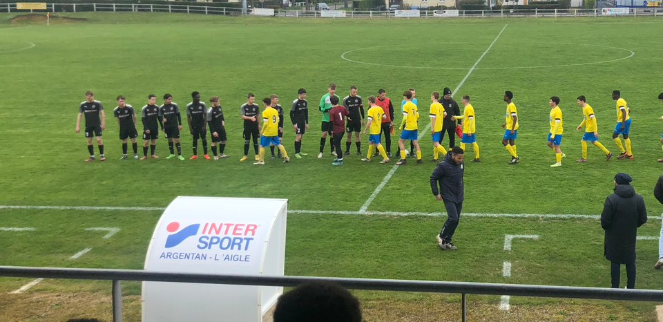

À propos de Transfert Foot
Transfert Foot est votre source numéro un pour les dernières nouvelles et mises à jour sur les transferts de football à travers le monde. Notre mission est de fournir des informations précises et à jour pour les fans de football passionnés.
L'AUTEUR
je m'appelle Diallo Ibrahima et je suis passionné de football depuis mon plus jeune âge. La pratique régulière de ce sport m'a appris la discipline, l'esprit d'équipe et la persévérance.
Cette année, j'ai décidé de mettre temporairement le football de côté afin de me consacrer pleinement à mes études en informatique, un domaine qui m’intéresse tout particulièrement, notamment la cybersécurité et la cyberdéfense.
Mon objectif est de développer mes compétences techniques tout en continuant à m'investir dans des projets qui me motivent.
j'ai realisé ce projet :
- Pour mettre en pratique mes compétences en développement web.
- Pour partager ma passion pour le football avec d'autres fans.
- Pour créer une plateforme où les amateurs de football peuvent se tenir informés des derniers transferts.
ce site a ete realisé dans un cadre scolaire
